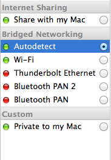

Learning VM Setup
About the Learning Virtual Machine
The Learning Virtual Machine (VM) is a sandbox environment for you to play with and learn Puppet Enterprise. The VM is powered by CentOS Linux. For your convenience, Puppet Enterprise (PE) has already been installed in the VM. To get started with learning about Puppet Enterprise, we need to get the VM running.
The Learning VM comes in two flavors - a VMware version that is suitable for VMware Player or VMware workstation on Linux and Windows based machines, and VMware Fusion on Mac, as well an Open Virtualization Format (OVF) file that is suitable for use with all virtualization players that support it. This is the format that is best suited to be opened and used with Oracle Virtualbox.
Getting started with the Learning VM
In order to get started, we need to open the appropriate file with the Virtualization software of your choice. Please note that in order to get started, you will first need to have installed software the enables you to open pre-packaged VMs, such as VMware Player, VMware Workstation, or Oracle Virtualbox. If you haven't already, please download and install one of these:
Once that is complete, please follow the instructions in the following sections.
VMware Setup
Before we get started, please ensure you have an up-to-date installation of your VMware virtualization software. The goal is to open the .vmx file in the downloaded VMware VM zip file, change the Network Adapter to use a Bridged connection, and tweak the memory settings, and finally, powering on the VM. If, at any point, you are not sure or want to start from scratch, you can delete the files extracted from the zip archive, and start over again, by extracting the files from the archive.
For the rest of this guide, the instructions are for VMware Fusion. However, this should assist you in using VMware Player or Workstation as well.
From the VMWare File menu, select Open and navigate to the .vmx file included in your Learning VM download. You can also drag and drop the .vmx file into the VMWare virtual machine library.
Don't launch the VM just yet; we'll want to adjust a couple of settings first. With the Learning VM selected in the VMWare library, open the Settings panel and click the Network Adapter icon.
Select Autodetect under the Bridged Networking heading as shown in the example.

Figure
Next, we'll want to allocate some extra memory to the Virtual Machine to ensure that it has the resources neccessary for everything to run smoothly. Go back to Settings panel and click the Processors & Memory icon. We suggest allocating at least two gigabytes of memory. Use the slider to set your memory allocation. Note that the Learning VM will likely still function with less memory allocated, but you may encounter performance issues.

Figure
Now that your settings are configured, click the Power On button to boot up the VM.
NOTE: Virtualization software uses mouse and keyboard capture to 'own' these devices communicate input to the guest operating system. The keystroke to release the mouse and keyboard will be displayed at the top right of the VM window.
Once the VM is powered up, skip ahead to the Next Steps section below.
VirtualBox Setup
Be sure you have an up-to-date installation of VirtualBox. The Learning VM works best with VirtualBox 4.x. You can find a free download of the latest version at https://www.virtualbox.org/wiki/Downloads.
Choose “Import Appliance” from the File menu and select the .ovf file included with your download.
NOTE: Do not use the “New Virtual Machine Wizard” and select the included .vmdk file as the disk; machines created this way will kernel panic during boot.
Don't launch the VM just yet; we'll want to adjust a couple of settings first.
In the VirtualBox Manager panel, select Network to access networking options. Choose Bridged Adapter from the drop-down menu.

Figure
For everything to work smoothly, we suggest allocating at least two gigabytes of memory to the VM. In the VirtualBox Manager panel, click System to access system options and use the slider to set your memory allocation. Note that the Learning VM will likely still function with less memory allocated, but you may encounter performance issues.

Figure
Now that everything is configured, click the Start button in the upper left to boot up the VM.
Note: Refer to VirtualBox documentation for additional information as required.
Once the VM is powered up in VirtualBox, follow the Next Steps below:
Next Steps
Once you have the VM running, check if you can log into it. You can use the following credentials to log in:
- Login Username: root
- Password: puppet
Once you are logged in, make a note of the IP address. You'll need this to access the VM via SSH. If you forget the IP or if it changes, you can access it again by entering the following command in the VM commandline.
ifconfig
The IP address will be listed as the 'inet addr' for the 'eth0' interface. For example:

Figure
The IP address for the VM in the above example is: 192.168.16.135. Please note that the IP address for your VM will be different. Please make a note of your IP address.
Now you are ready to learn more about Puppet using the installation of Puppet Enterprise on the VM. Please continue following the rest of the Quest Guide. We hope you have fun learning Puppet!